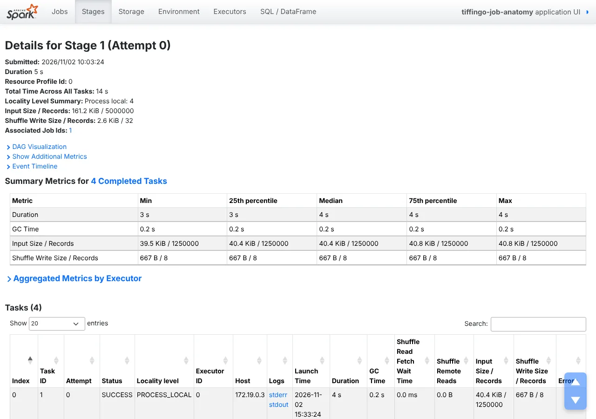

How a PySpark program becomes jobs, stages and tasks
This lesson answers the most important question for anyone writing Spark code: what actually runs, and when? We follow one program on 5,000,000 orders from transformations to an action, to jobs, stages and tasks, and read every step in the Spark UI. All outputs and screenshots are real (Spark 4.3.0).
Module 1 · Start here: why Spark?⏱ 36 minBeginner → IntermediateSpark 4.3.0Real Spark UI screenshotsLazy vs eager, measuredRuns in your browser (Python)8 practice problems
1 The story
“Why did my three lines take no time, and the fourth took ages?”
Before you start: Lesson 1.3 (driver and executors). From the Hive course: a Spark stage is like a Tez vertex, and an Exchange is like a Tez shuffle edge.
Riya timed her PySpark notebook cell by cell. Reading five million orders, filtering and grouping took a fraction of a second. Then show() took several seconds. She suspects her timer is broken. Kabir opens the Spark UI and sees “jobs”, “stages” and “tasks” he cannot explain.
Riya
Sir, did Spark really read five million rows in 0.3 seconds?
Arjun Sir
It read nothing. Transformations such as where and groupBy only add steps to a plan. When you call an action such as show(), Spark optimises the whole plan and starts a job. The job is cut into stages wherever data must be shuffled, and each stage runs one task per partition.
Kabir
And the Spark UI shows all of that?
Arjun Sir
Every job, stage and task, with timings and row counts. Today we run one program on the cluster, label its jobs, and read the UI, the plan and the REST API together. All screenshots and outputs are real, from Spark 4.3.0.
2 Definition
Actions, jobs, stages and tasks
Formal definition (write this in exams)
Spark evaluates lazily: transformations build a logical plan without processing data, while actions trigger execution. For each action, Spark SQL’s optimizer (Catalyst) produces a physical plan, and the driver’s DAG scheduler submits one or more jobs. Each job is divided into stages at shuffle boundaries (wide dependencies, where rows must be redistributed between partitions); consecutive narrow operations are pipelined inside one stage. A stage runs as a set of tasks, one per partition, executed in parallel on executor slots. Shuffle map stages write shuffle files that the next stage reads. The Spark UI (port 4040 while the application runs, or the history server afterwards) shows jobs, stages, tasks, storage, executors and SQL plans with their metrics.
In simple words
Spark waits until you ask for a result. Then it turns your code into a job, cuts the job into stages wherever data must move between machines, and runs one task per piece of data. The Spark UI shows all of this.
Words you’ll meet in this lesson
TransformationDescribes a new DataFrame: where, select, groupBy … Lazy.
ActionAsks for a result: show, count, collect, write. Runs jobs.
JobThe work started by an action (sometimes several per action).
StagePart of a job with no shuffle inside; ends at a shuffle.
TaskOne stage applied to one partition, on one executor slot.
Narrow / wideNarrow: each output partition needs one input partition. Wide: needs many (shuffle).
AQEAdaptive Query Execution: re-plans between stages using real sizes.
Skipped stageA stage whose shuffle output already exists, so it is not run again.
The program and what it became
Code
Kind
Jobs started
Seen in the lab
spark.read.parquet(…)
Reader
1 small job (footers/schema)
Job 0: 1 task
.where(…), .groupBy(…).agg(…)
Transformations
0
334 ms in total (analysis only)
.orderBy(…).show(10)
Action
2 (AQE: map stage, then result)
Jobs 1–2: 4 tasks + 1 task
orders.count()
Action
2
Jobs 3–4: 4 tasks + 1 task
daily.explain()
Prints the plan
0
Physical plan with one Exchange
Jobs, stages and tasks at three levels
Pick your level. New to this? Start at Beginner and climb.
Beginner Ordering food for a party
Writing the shopping list (transformations) costs nothing; going to the shop (action) is the real work.
The trip has legs: buy everything in each shop (stage), then bring it all together (shuffle) before cooking.
Several friends shop at once, one aisle each (tasks on partitions).
Intermediate The rules
Transformations (where, select, withColumn, groupBy, join) are lazy; actions (show, count, collect, write) run jobs.
A job is cut into stages at wide dependencies (shuffles: groupBy, join, orderBy, repartition). Narrow steps (filter, select) are fused into one stage.
One task per partition per stage. With Adaptive Query Execution (AQE), one action can start several jobs; stages whose output already exists are skipped.
Advanced What the lab showed
Defining three transformations took 334 ms and started 0 jobs (Spark still analysed them: a misspelt column failed at once).
show() started 2 jobs; the first stage read 4 partitions × 1,250,000 rows but wrote only 32 rows to the shuffle, thanks to partial aggregation.
Reading Parquet started a small job before any action, to read the file footers and schema.
Exam tip: “What is the difference between a job, a stage and a task?” An action triggers a job; the job is split into stages at shuffle (wide) boundaries; each stage runs as tasks, one per partition, in parallel on executors. Narrow transformations are pipelined within a stage. Transformations are lazy; only actions start jobs.
3 Types and ways to use it
Narrow vs wide, and the tabs of the Spark UI
Operation
Dependency
New stage?
Example
where, select, withColumn, map
Narrow
No (pipelined)
where(status = DELIVERED)
union, coalesce (fewer partitions)
Narrow
No
coalesce(1)
groupBy + agg, distinct
Wide
Yes (Exchange)
groupBy("city")
join (not broadcast)
Wide
Yes
orders ⋈ customers
orderBy / sort, repartition
Wide
Yes
orderBy(desc("revenue"))
UI tab
Shows
Use it to
Jobs
Every job, its description, duration, stages, tasks
Find the slow action
Stages
Tasks per stage, shuffle read/write, task time percentiles
Spot skew and spills
Storage
Cached DataFrames and how much is in memory
Check cache() worked (Lesson 3.1)
Environment
Spark, Java, Python versions and every configuration
Confirm settings
Executors
Executors, cores, tasks, memory, GC, logs
Find failing or overloaded executors
SQL / DataFrame
Each query’s plan with row counts per operator
See where rows are filtered or exploded
Calling several actions on the same DataFrame repeats the work each time: our show() and count() both read the Parquet files. If you reuse a result, cache it (Lesson 3.1) or write it once. Also avoid actions inside loops “just to check”.
4 Step by step
One program, followed through the engine
All outputs are real: Spark 4.3.0 in local mode (Steps 1–2) and on our standalone cluster with two executors (Steps 3–7), reading orders_big: 5,000,000 orders in 8 Parquet files. Screenshots come from the history server.
Step 1 · Transformations are free; actions are not
3 transformations : 334.4 ms jobs run: 0
1 action collect(): 3591.4 ms jobs run: 2
rows returned: 8
Three transformations took 334 ms and ran no jobs. One action took 3.6 s and ran 2 jobs. The 334 ms were not data processing: Spark analysed the plan (resolved columns and types) and stopped there.
Step 2 · Lazy, but checked at once
orders = spark.read.parquet("orders_big")
bad = orders.groupBy("cty").count() # typo; no action called
AnalysisException: [UNRESOLVED_COLUMN.WITH_SUGGESTION] A column, variable, or function parameter with name `cty` cannot be resolved. Did you mean one of the following? [`city`, …]
The error appeared on the transformation line, not at a later action: DataFrame operations are analysed eagerly and executed lazily. Spark even suggested the right column. (With Spark Connect clients, analysis can be deferred; Lesson 11.3.)
setJobDescription labels jobs in the UI. 8 Parquet files became 4 partitions: Spark packed the small files into one split per core (4 cores in the cluster). Mumbai and Bengaluru have about twice the orders of other cities because the generator weighted them.
Step 4 · Five jobs from two actions
python3 rest.py tiffingo-job-anatomy # /api/v1/applications/<id>/jobs and /stages
Real screenshot: the Jobs tab of our program. The descriptions come from setJobDescription(). Job 0 ran before any action; show() and count() started two jobs each.Job 0 (labelled A) ran before any action: reading Parquet lists the files and reads their footers to learn the schema. show() started jobs 1 and 2: with AQE, Spark first runs the stage before the shuffle as its own job, looks at the real shuffle sizes, then plans the rest. Job 2’s “5 tasks” include 4 of skipped stage 2; only 1 task ran. count() did the same with jobs 3 and 4.
Real screenshot: job 2’s DAG. Stage 2 (grey) is skipped: its shuffle files were written by job 1. Stage 3 reads them (AQEShuffleRead), finishes the aggregation and takes the top rows.Read the plan bottom-up. Scan, Filter, Project and the first HashAggregate (partial counts and sums) are narrow, so they run in one stage. Exchange hashpartitioning(city, 200) is the shuffle: rows of the same city must meet. Everything after it is the next stage. The 200 partitions shrank at run time: AQE coalesced them because the data was tiny.
Step 6 · Tasks: one per partition
Tasks: 4 Input: 161.2 KiB / 5,000,000 records
per task: 1,250,000 records in, 8 shuffle records out (667 B)
duration: 3–4 s each, GC 0.2 s
Shuffle write total: 2.6 KiB / 32 records

Real screenshot: stage 1 ran 4 tasks, each reading 1,250,000 records and writing only 8 shuffle records (one partial result per city).Four partitions, four tasks, one on each of the 4 executor slots, all at once. Each task aggregated its 1,250,000 rows down to 8 rows (one per city) before the shuffle. That is why only 32 rows and 2.6 KiB crossed the network instead of 4.75 million rows. The low “Input” size is Parquet’s compression and column pruning: only city, amount and status were read.
Real screenshot: the SQL tab for show(). Rows between operators: 5,000,000 scanned → 4,750,000 after the filter → 32 into the Exchange → 8 cities.The SQL tab is usually the fastest way to understand a slow query: it shows each operator with its row counts and time. Here the filter removed 250,000 cancelled orders, and the partial aggregation did almost all the work in the first stage (10.1 s of task time across 4 tasks) while the final stage took 37 ms.
5 See it happen
Action → job → stages → tasks
Left: real outputs. Right: what happens inside the engine.
Action → job → stages → tasks 5 steps
What you see
Defining the report was instant; collecting it took 3.6 s.
A typo failed before any job ran.
Two actions became five jobs.
The plan has one Exchange: one shuffle.
Each task sent 8 rows, not 1.25 million.
Behind the screen
Spark records transformations as a logical plan.
The analyzer resolves columns eagerly.
AQE runs the map stage, then re-plans.
Narrow steps are pipelined inside a stage.
Partial sums per partition, final sums after the shuffle.
Three live scenarios follow: actions in a loop, diagnosing with the UI, and removing shuffles.
Real-time scenario 1
Actions inside a loop
A very common beginner slowdown. (Typical; job behaviour from our lab.)
Too many actions 5 steps
Animated example
Slow notebook.
Many jobs in the UI.
Group once.
Much faster.
Count actions.
Real-time scenario 2
Reading the Spark UI during an incident
How engineers find the slow part of a job. (Typical workflow.)
Spark UI diagnosis 5 steps
Animated example
Something is slow.
Find the stage.
Look at task spread.
Find the operator.
Fix and measure.
Real-time scenario 3 · advanced
Removing shuffles you do not need
A code-review habit of experienced Spark engineers. (Typical.)
Shuffle hygiene 5 steps
Animated example
Three shuffles.
One is useless.
One is too big.
One remains.
Always explain().
6 Real-world use
Jobs, stages and the UI at work
1. On-call debugging
The first step for a slow or failed job is the Spark UI or history server: slowest stage, task spread, SQL plan.
Alert→Spark UI→Root cause
2. Code review with explain()
Teams check plans for extra Exchanges, missing filters and wrong join strategies before merging.
Pull request→explain()→Approved
3. Labelled jobs
setJobDescription and job groups make long pipelines readable in the UI and in monitoring tools.
Pipeline→labels→Readable UI
4. Persistent UIs in the cloud
Managed services keep the Spark UI after clusters end (e.g. EMR’s persistent application UI) for audits and tuning.
Event logs→history→Post-mortem
5. Automated job reports
Platform teams pull /api/v1 metrics after each run to track task time, shuffle bytes and cost per job.
Job ends→REST API→Dashboard
Examples are simplified.
7 Run the code
Run the code: build your own lazy DataFrame
PySpark cannot run in the browser, but its execution model can. This small class behaves like Spark: transformations record steps, actions run them. Press Run, then try the challenges.
# A tiny lazy "DataFrame": transformations record steps, an action runs them
class LazyFrame:
def __init__(self, rows, steps=()):
self.rows, self.steps = rows, list(steps)
def where(self, f): # transformation: just remember it
return LazyFrame(self.rows, self.steps + [("where", f)])
def with_gst(self):
return LazyFrame(self.rows, self.steps + [("map", lambda r: {**r, "gst": r["amount"] * 0.05})])
def collect(self): # action: now do the work
out = self.rows
for kind, f in self.steps:
out = [r for r in out if f(r)] if kind == "where" else [f(r) for r in out]
return out
orders = LazyFrame([{"city": "Mumbai", "amount": 530}, {"city": "Pune", "amount": 210}])
plan = orders.where(lambda r: r["amount"] > 300).with_gst()
print("steps recorded:", [k for k, _ in plan.steps])
print("result:", plan.collect())
job 0: stages [0] tasks 1 skipped-stages 0 A: read + filter + groupBy (lazy, nothing runs y
job 1: stages [1] tasks 4 skipped-stages 0 B: show() the city report
job 2: stages [2, 3] tasks 5 skipped-stages 1 B: show() the city report
job 3: stages [4] tasks 4 skipped-stages 0 C: count() all orders
job 4: stages [5, 6] tasks 5 skipped-stages 1 C: count() all orders
Port 4040 while the application runs; the history server (18080) afterwards. Shown here summarised.
8 Line by line
How a groupBy splits into two stages
Follow partial and final aggregation across a shuffle.
Worked examples: real problems, solved and traced in memory
Three ways to use jobs, stages and the UI in real work.
Example 1BeginnerConcepts · actions
Count the actions
Problem statement
How many jobs (at least) will this code start?
Input
five lines of PySpark
Expected output
reader: small job df = spark.read.parquet(p)
transformation f = df.where(...)
transformation g = f.groupBy('city').count()
ACTION g.show()
ACTION print(f.count())
Approach
Mark transformations.
Mark actions.
Each action ≥ 1 job.
Solution: run it live
What happens in memory, step by step
Recorded from a real Python run: press Next to execute one line at a time. Watch variables change in each frame, and lists and dictionaries (numbered #1, #2 …) fill up as objects.
Example 2IntermediateDebugging · UI
Find the slow stage
Problem statement
Use stage metrics to decide where to look first.
Input
stage durations and task max/median
Expected output
stage 7: 380.0 s median task 4 s max 360 s SKEW?
stage 1: 5.0 s median task 4.0 s max 4.0 s
stage 3: 0.5 s median task 0.5 s max 0.5 s
Approach
Sort stages by duration.
Compare max and median task time.
Open the SQL tab.
Solution: run it live
What happens in memory, step by step
Recorded from a real Python run: press Next to execute one line at a time. Watch variables change in each frame, and lists and dictionaries (numbered #1, #2 …) fill up as objects.
Example 3AdvancedPerformance · plans
Remove a useless shuffle
Problem statement
A pipeline repartitions before a groupBy on the same key. Is it needed?
Input
repartition(200, "city").groupBy("city")
Expected output
before: ['Exchange hashpartitioning(city, 200) <- repartition', 'HashAggregate (no extra exchange)']
after : ['HashAggregate partial', 'Exchange hashpartitioning(city, 200)', 'HashAggregate final']
Approach
Count Exchanges in explain().
groupBy already hash-partitions by key.
Drop the repartition.
Solution: run it live
What happens in memory, step by step
Recorded from a real Python run: press Next to execute one line at a time. Watch variables change in each frame, and lists and dictionaries (numbered #1, #2 …) fill up as objects.
9 Quiz and revision
Check yourself
Quick revision
Lesson 1.4 in one screen
Transformations are lazy (plan only); actions start jobs. Lab: 334 ms / 0 jobs vs 3.6 s / 2 jobs.
DataFrames are analysed eagerly: bad column names fail immediately.
Action → job(s) → stages (cut at shuffles) → tasks (one per partition).
Narrow ops are pipelined in one stage; wide ops (groupBy, join, orderBy, repartition) add an Exchange.
AQE: one action can start 2 jobs; reused shuffle output shows as skipped stages.
UI: Jobs → Stages (task percentiles) → SQL tab (rows per operator). Port 4040, history server 18080.
Interview and viva questions
Why is the Spark UI gone after my job ends?
The UI lives in the driver. When the application stops, it disappears unless event logging is on and a history server reads the logs. Our lab enables spark.eventLog.enabled and runs a history server on port 18080.
What is the number 200 in Exchange hashpartitioning(city, 200)?
spark.sql.shuffle.partitions, the default number of shuffle partitions. With AQE enabled (the default), Spark coalesces them at run time based on real data sizes; our tiny shuffle ended in 1 partition.
Is RDD code also lazy?
Yes. RDD transformations (map, filter) are lazy and actions (collect, count, saveAsTextFile) run jobs. The difference is that RDDs are not optimised by Catalyst (Module 2).
Does show() process all the data?
Not always. For a simple scan, show() reads only enough partitions for the first rows. With a groupBy or orderBy, like ours, all data must be processed first.
Can I see the plan without running the job?
Yes: df.explain() prints the plan, and explain("formatted") gives a readable version. No job is started (Lesson 7.3).
Practice problems
Programs about laziness, stages and tasks.
P1Easy
Action or not?
Classify operations.
Input
list of names
Expected output
where transformation
show ACTION
groupBy transformation
count ACTION
select transformation
Show solution and explanation
actions = {"show", "count", "collect", "write", "take", "first"}
for op in ["where", "show", "groupBy", "count", "select"]:
print(op, "ACTION" if op in actions else "transformation")
where transformation
show ACTION
groupBy transformation
count ACTION
select transformation
How it works: Only actions start jobs.
P2Easy
Tasks in a stage
Tasks for 8 partitions.
Input
8
Expected output
8
Show solution and explanation
print(8)
8
How it works: One task per partition.
P3Easy
Waves
How long do 8 tasks of 4 s take on 4 slots?
Input
8 tasks, 4 slots, 4 s
Expected output
8 s
Show solution and explanation
print(-(-8 // 4) * 4, "s")
8 s
How it works: Two waves of four.
P4Medium
Count stages
Stages for a pipeline.
Input
read, where, join, groupBy, write
Expected output
3
Show solution and explanation
wide = {"join", "groupBy", "orderBy", "repartition"}
ops = ["read", "where", "join", "groupBy", "write"]
print(1 + sum(o in wide for o in ops))
3
How it works: Broadcast joins avoid the join shuffle (Lesson 8.2), giving one stage fewer.
How it works: Why groupBy with sum/count is cheap compared to collecting all rows.
P6Medium
Loop to groupBy
Rewrite a loop of counts as one query.
Input
3 cities
Expected output
df.groupBy('city').count() # 1 job instead of one job per city
Show solution and explanation
print("df.groupBy('city').count() # 1 job instead of one job per city")
df.groupBy('city').count() # 1 job instead of one job per city
How it works: Each count() in a loop re-reads the data.
P7Business problem
Wasted scans
Cost of a 120-action notebook.
Input
120 jobs × 10 s vs 1 job × 15 s
Expected output
20.0 min vs 0.25 min
Show solution and explanation
print(120 * 10 / 60, "min vs", 15 / 60, "min")
20.0 min vs 0.25 min
How it works: Same answer, a fraction of the cluster time.
P8Business problem
Network saved
Bytes shuffled with and without partial aggregation.
Input
4.75 M rows × 20 B vs 2.6 KiB
Expected output
90.6 MiB vs 0.003 MiB
Show solution and explanation
print(round(4_750_000 * 20 / 2**20, 1), "MiB vs 0.003 MiB")
90.6 MiB vs 0.003 MiB
How it works: At terabyte scale this is the difference between minutes and hours.
Real-world scenario questions (asked in company interviews)
Jobs, stages and tasks are asked about in nearly every Spark interview.
Any company · SparkFresher
“What is lazy evaluation?”
Explain lazy evaluation with an example.
The interviewer is checking: do you know transformations vs actions?
Show a strong answer
Transformations like where and groupBy only build a plan; nothing is computed until an action like count, show or write. Spark can then optimise the whole plan, e.g. push filters into the scan and aggregate partially before shuffling. In our lab three transformations took 334 ms with no jobs; one collect() took 3.6 s.
Avoid: Saying transformations run in the background.
Data engineeringFresher
Job vs stage vs task
Define job, stage and task.
The interviewer is checking: can you be precise?
Show a strong answer
Job: started by an action.
Stage: part of a job between shuffles; narrow ops pipelined.
Task: one stage on one partition, run on an executor slot.
Avoid: Mixing up stages and tasks.
Data engineeringMid-level
Notebook with hundreds of jobs
A notebook starts 300 jobs and takes 30 minutes.
The interviewer is checking: can you read the Jobs tab?
Show a strong answer
Find actions in loops (count, collect, show).
Replace them with one grouped query or cache a reused DataFrame.
Verify the job count and duration in the UI.
Avoid: Adding executors.
PlatformSenior
Explain a slow stage
One stage takes 90% of a job’s time.
The interviewer is checking: can you use the UI systematically?